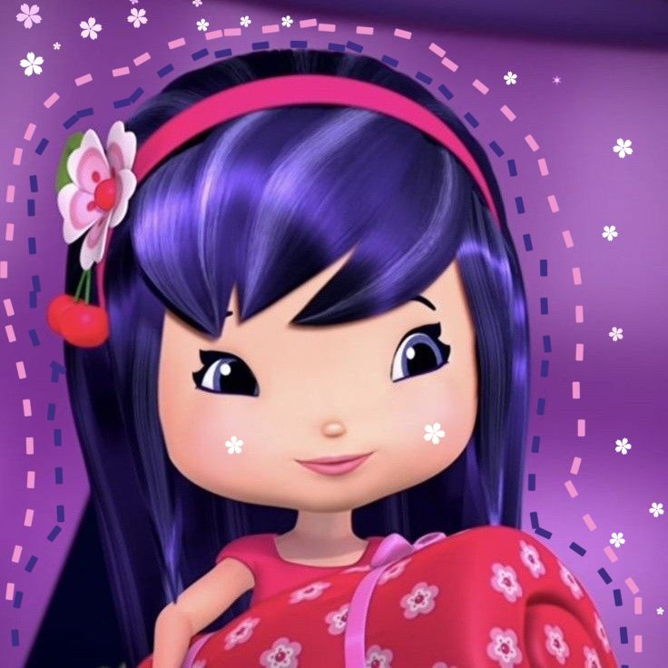
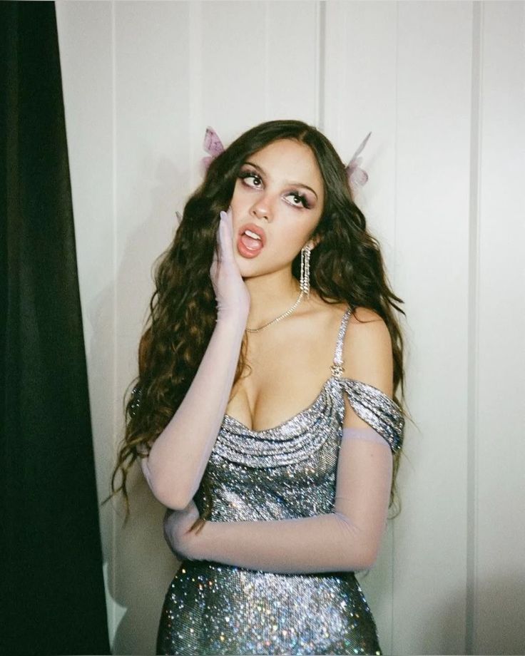
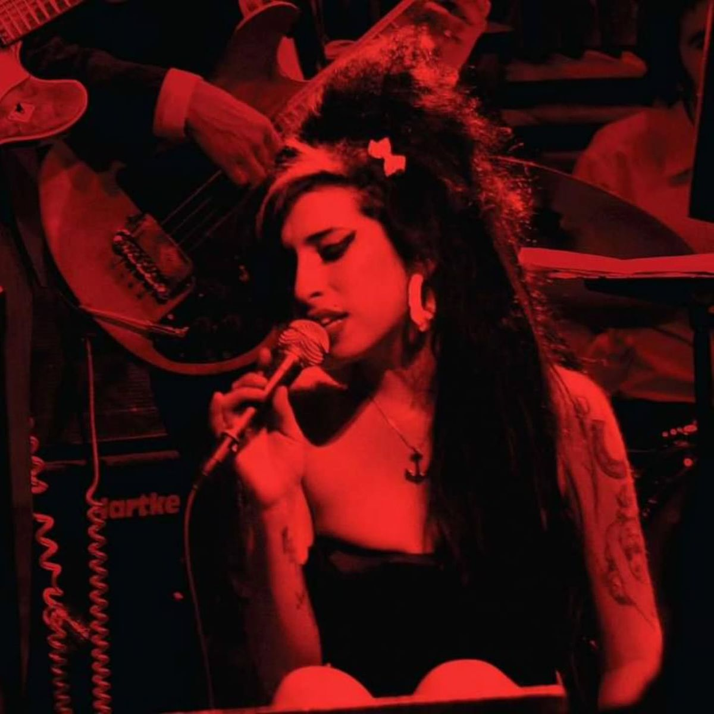
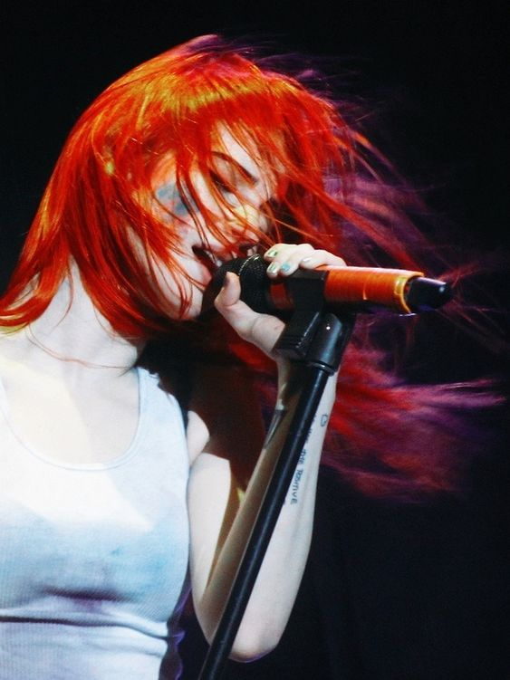

backstage individual e seguro ativo
sad songs, cherry lipstick & secret remixes.
Um portal Y2K inspirado na Cerejinha com músicas, looks, playlists emocionais e segredos do backstage salvos no seu perfil.
Crie sua conta ou entre para liberar seus segredos

underground backstage
Um portal Y2K inspirado na Cerejinha com músicas, looks, playlists emocionais e segredos do backstage salvos no seu perfil.
Escolha a fita cassete e escute a vibe oficial da Cherry Jam
Pausado
Como você está se sentindo hoje? (ex: triste, raiva, feliz, ansiosa, apaixonada)
Sua playlist aparecerá aqui...
Clique em um look para ativar e calibrar a estética da Cherry Jam

Glitter borrado, delineado cherry, coturno preto e energia pop punk emocional.

Mini saia preta, gloss vermelho, guitarra rosa e estrelas metálicas brilhantes.

Neon escuro, correntes delicadas, CDs riscados e caos feminino indie rock.
Selecione um look acima para sincronizar e calibrar os medidores com o seu backstage secreto.
Escreva segredos e salve no backstage